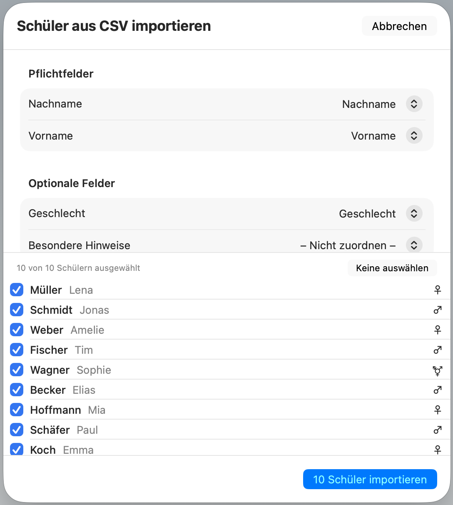
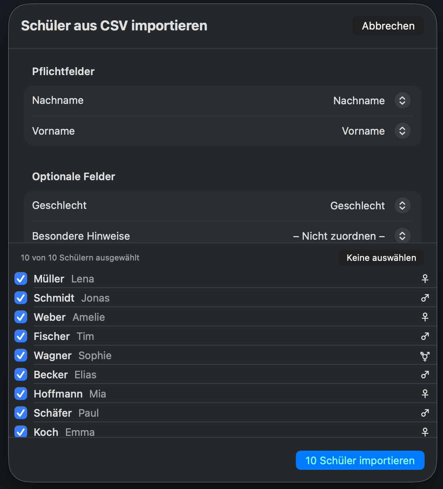

Die sichere Notenverwaltung
für Lehrkräfte
Schulnoten verwalten, Sitzpläne erstellen, Checklisten führen und mehr – die Noten-App für deinen Mac und dein iPad. Ohne Cloud, ohne Abo, ohne Kompromisse beim Datenschutz.
Einmal kaufen, dauerhaft nutzen – kein Abo, keine versteckten Kosten.
Alles, was Lehrkräfte brauchen
NotenPilot vereint die wichtigsten Werkzeuge für deinen Schulalltag in einer sicheren, lokalen Noten-App – egal ob Gymnasium, Realschule, Gesamtschule oder Grundschule.
Notenverwaltung
Erfasse Noten für Klassenarbeiten, Klausuren, mündliche Noten und tägliche Leistungen. NotenPilot berechnet den Notendurchschnitt automatisch – gewichtet nach deinen Vorgaben. Dein digitales Notenbuch, übersichtlich und schnell.


Einfacher Wechsel per CSV-Import
Du nutzt bereits eine andere Noten-App oder Schülerverwaltung? Importiere deine bestehenden Schüler- und Notendaten einfach per CSV-Datei. Die meisten Anwendungen – ob Notenbuch, Notenrechner oder Schülerverwaltung – bieten einen CSV- oder Excel-Export an. Diese Dateien lassen sich direkt in NotenPilot einlesen. Ein Import-Assistent hilft dir bei der Zuordnung der Spalten, sodass kein technisches Wissen nötig ist.


Sitzplaneditor
Erstelle interaktive Sitzpläne per Drag-and-Drop. Passe das Raster flexibel an deinen Klassenraum an und ordne Schüler mit wenigen Klicks zu – ideal für den Unterricht an jeder Schule.


Sicherheit auf höchstem Niveau
Deine Daten werden mit AES-256 verschlüsselt und der Schlüssel sicher in der macOS Keychain gespeichert. Schütze die App zusätzlich mit einem Passwort oder Touch ID.


Klassenverwaltung
Klassen anlegen, Schüler verwalten und per CSV importieren – schnell und unkompliziert.
Checklisten
Erstelle Checklisten mit Fortschritts-Tracking und filtere nach Gruppen – ideal für den Unterrichtsalltag.
Zeugnisnoten & Zensuren
Verwalte Halbjahres- und Jahreszeugnisse übersichtlich an einem Ort. Alle Zensuren auf einen Blick.
Sammelnoteneingabe
Trage Noten für die ganze Klasse auf einmal ein – ideal für Klassenarbeiten und Tests.
Noten & Punkte
Klassisches Notensystem (1–6 mit +/−) oder Oberstufen-Punktesystem (0–15) – pro Klasse wählbar.
Tägliche mündliche Noten
Erfasse Mitarbeitsnoten und vergessene Hausaufgaben im Unterrichtsalltag – mit Quartal-Archivierung.
Erinnerungen & Aufgaben
Erstelle Aufgaben und Erinnerungen mit Status-Tracking, damit nichts vergessen wird.
Datenexport
Exportiere Schulnoten als PDF, JSON oder im verschlüsselten .notenpilot-Format – für Zeugniskonferenzen oder die eigene Dokumentation.
Schuljahreswechsel
Versetze Klassen ins nächste Schuljahr – Schüler und Fächer werden übernommen, Noten zurückgesetzt.
Entwickelt für den deutschen Schuldatenschutz
NotenPilot erfüllt die Anforderungen aller 16 Bundesländer an die Verarbeitung von Schülerdaten auf privaten Geräten in der Schule. Lokale Speicherung, starke Verschlüsselung, keine Cloud.
DSGVO-konform
Entwickelt nach den Vorgaben der DSGVO und der Schuldatenschutzverordnungen. Geeignet für die Genehmigung durch die Schulleitung.
Einmalkauf – kein Abo
Einmal kaufen, dauerhaft nutzen. Keine monatlichen Kosten, keine In-App-Käufe, keine Überraschungen.
Von einem Lehrer entwickelt
NotenPilot wurde von einem Lehrer für Lehrkräfte entwickelt – mit Verständnis für den Schulalltag und die Anforderungen des Datenschutzes.
Keine Cloud
Alle Daten bleiben lokal auf deinem Gerät. Kein Upload, kein Server, keine Drittanbieter-Cloud.
Kein Internet nötig
Die App funktioniert komplett offline. Es werden keinerlei Netzwerkverbindungen hergestellt.
Kein Tracking
Keine Analyse-Tools, keine Werbung, keine SDKs. Dein Nutzungsverhalten bleibt privat.
App Sandbox
Die App läuft in einer isolierten Sandbox – kein Zugriff auf Dateien oder Daten außerhalb der App.
Keine Drittanbieter
Kein Code von Drittanbietern, keine externen APIs. 100% eigenentwickelt für maximale Kontrolle.
Häufige Fragen
Werden meine Daten in die Cloud geladen?
Nein. NotenPilot speichert alle Daten ausschließlich lokal auf deinem Gerät. Es werden keinerlei Netzwerkverbindungen hergestellt – die App funktioniert komplett offline.
Gibt es ein Abo oder versteckte Kosten?
Nein. NotenPilot ist ein Einmalkauf. Alle Funktionen sind enthalten, es gibt keine In-App-Käufe, kein Abo und keine Werbung. Zukünftige Updates sind im Kaufpreis inbegriffen.
Auf welchen Geräten läuft NotenPilot?
NotenPilot läuft auf dem Mac (macOS) und dem iPad (iPadOS). Beide Versionen sind im Kaufpreis enthalten.